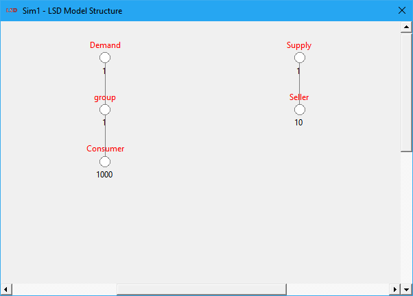

The LSD Model Structure window presents an interactive graphical representation of the LSD model hierarchical structure of Objects. It is automatically opened whenever a model configuration is loaded in the LSD Browser. The model structure can be used to quickly browse through the model, since the Object symbols can be (left- and right-) clicked.
Each Object type in the model is represented by its name in red and a white circle connected with a line to its parent Object. Below each Object circle symbol are reported the number of instances currently existing in the model for that Object. In case there are multiple instances of its parent Object, there is one number for each group of descendants from each instance of the parent Object. If there are too many groups to present, LSD shows only the initial ones.
The top-most Root Object is not shown in the model structure, as it should not contain any element most of the times. All direct descendants (sons) of the Root Object are shown at the top of the structure. In the level below, are the descendants of the sons of Root (its grandsons), as well all other Objects descending from them and so on. Very large model structures (too wide or too deep) may show incomplete in the default view of the window. To uncover the hidden Objects, the user may use the scroll bars to pan around the model structure or increase (or maximize) the size of the LSD Model Structure.
Hovering with the mouse over an Object symbol briefly shows the list of elements contained in it:
· Parameter names are followed by (P)
· Variable names are followed by (V) or (V_X), where X is the maximum number of lags used.
The LSD Model Structure can be used to change the LSD Browser current Object by (left-) clicking on its symbol.
It is also possible to access the Object context menu by right-clicking its symbol. From the pop-up menu the user can perform several actions on the selected Object: add a new parent, rename, change the number of instances, delete, add elements, edit initial values and browse elements.
The distribution of the Object representations on the LSD Model Structure can adjusted using the five buttons available in the lower right side of the window:
· A: automatically adjusts both the horizontal and vertical space distribution of Objects, trying to use as much of the window area as possible.
· ▲/▼: decreases/increases the vertical space distribution of Objects in the window.
· ◄/►: decreases/increases the horizontal space distribution of Objects in the window.
When the Model Structure window is resized, it may be necessary to use these buttons to be able to see all the Objects in the model configuration.